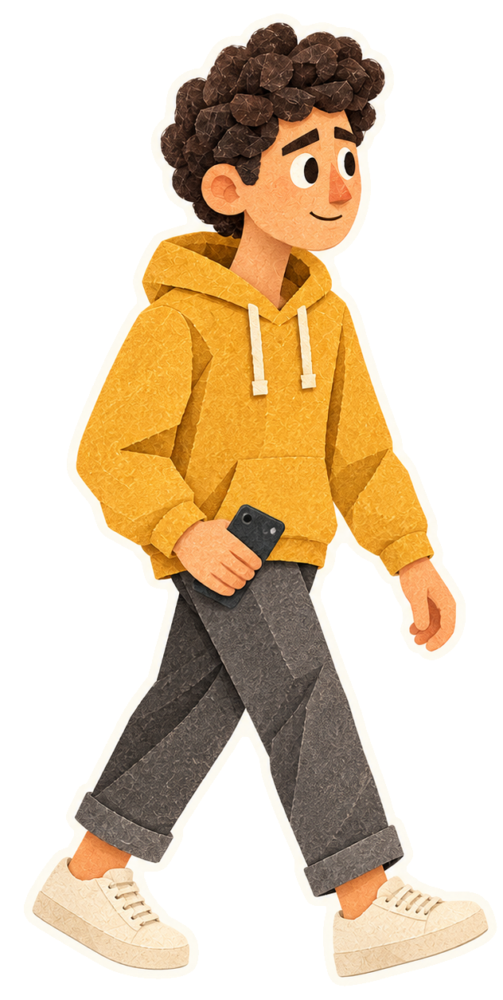
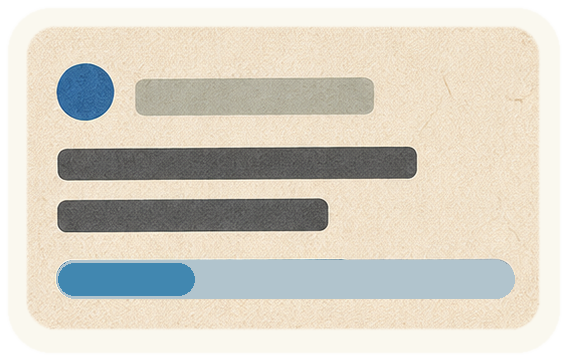
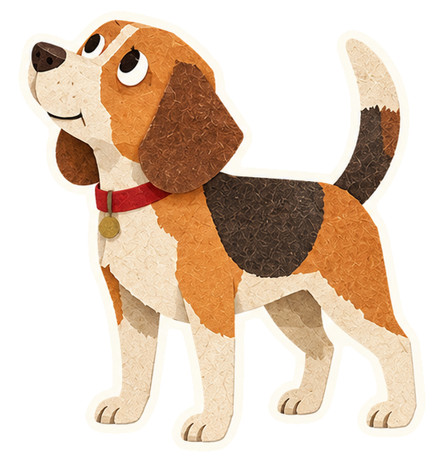

01 / Person · Static
Eyes forward. Phone at hip height. No body or head loop.
225 paper stickers · Asset review only · Act 1 stays unchanged
Loading assets…



Same session, same context.
Just a different screen.
Eyes forward. Phone at hip height. No body or head loop.
3 s loop. The progress segment travels back and forth. No completion mark.
2.4 s loop. Head, body and feet stay still.
The composition uses animated WebP for soft transparent edges. GIF copies are available above. Reduced motion starts with still frames.
Back to asset review